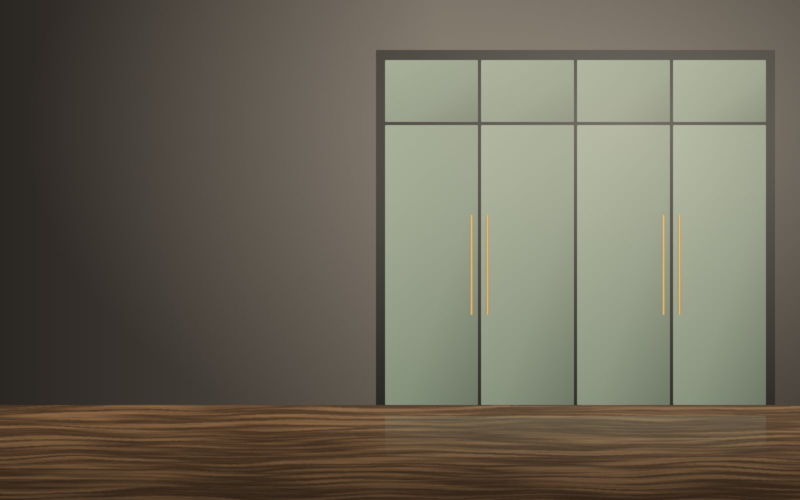
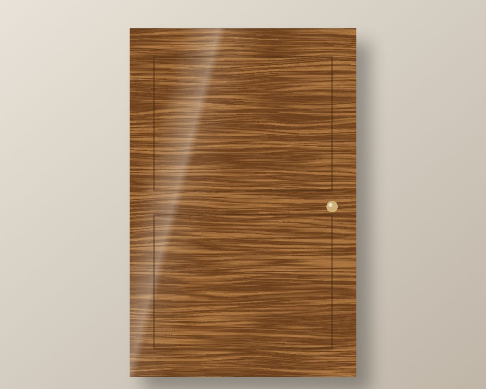

PU paint & polish studio · Hyderabad
We Create
Precision Coated.
We finish kitchens, wardrobes, doors and furniture in PU, using Sirca, ICA and Axalta coatings. Matte or glossy, any shade, matched to your sample.
PU paint from ₹300/sq ft · PU polish from ₹210/sq ft + GST
- Studio in IDA Bollaram
- Open Mon – Sat, 9:30 am – 5:30 pm
- Sample panel before production
Every surface
tells a story.
Surface Studio is a finishing studio dedicated to one thing: surfaces that look and feel exceptional for years.
We match the coating system to the job: a matte kitchen shutter, a glossy wardrobe, or an open-grain veneer that should look like nothing was applied at all. You send us panels. We send back finished pieces, ready to install.
- Genuine branded coatings, never diluted
- Every panel tracked from cutlist to dispatch
- Shade matched to your sample, RAL or NCS
What we do
Finishing expertise
Five services, one standard. Sprayed by hand, sanded between coats and cured with patience.
Ask for a quote
PU Paint
Solid-colour 2K polyurethane on MDF and HDHMR shutters, in matte or glossy. Any RAL or NCS shade, or matched to your sample. From ₹300 per sq ft.
Kitchens · wardrobes · TV units · wall panels
PU Polish
Clear PU over veneer and solid wood, natural or tinted, in matte or glossy. The grain stays visible and protected. From ₹210 per sq ft.
Veneer shutters · doors · furniture
Metallic & Pearl PU
Axalta metallic and pearl topcoats for feature shutters and statement units. From ₹400 per sq ft.
Feature walls · islands · display units
Modular Panel Finishing
Send your factory cutlist. Every panel is barcode-tracked, finished on one or both sides as listed (BSL / OSL) and returned in batches.
Modular factories · interior firms
Furniture & Door Refinishing
Old polish sanded back, filled and re-coated in PU polish or paint, for doors, chairs and loose furniture.
Homes · renovations
Instant quote
Upload a cutlist or drawing.
Get a price.
Drop in the panel list or drawings from your factory or designer and see an estimate in seconds, worked out from our current Sirca, ICA and Axalta rates.
- 1Upload the cutlistA factory panel list as PDF, Excel or CSV. Lists with CLENG / CWIDTH / CNT work as they are. Only drawings? Upload those instead.
- 2Pick the finishPU paint or polish, brand and sheen. Check the panel table and tick any panels with design work.
- 3Send us the quote codeShare it on WhatsApp with the file, and we confirm after inspecting the panels.
Panel lists are read on your own device and never leave it. Drawings are sent securely to be read only when automatic reading is switched on.
No file chosen yet.
Elevations or shop drawings with sizes marked. We read the panel sizes into the table below for you to check. Up to 10 files.
| # | Part | Length | Width | Qty | Sides | Edges | Design | Remove |
|---|
Metallic and pearl are available with Axalta PU paint. Prefer to talk? Send your details and we will call you.
Who we work with
Built around how you work
Interior designers & architects
Send a drawing and a reference. We sample the finish on a panel for your client to approve, then match it across the whole project.
Modular kitchen factories
Share the panel list. We track every panel by barcode and return finished batches in the order your installers need them.
Homeowners & carpenters
Bring your shutters, doors or furniture to the studio in IDA Bollaram. We help you choose the system, shade and sheen.
PU, explained
What is a PU finish?
PU is short for polyurethane: a two-component coating, mixed with a hardener and sprayed in thin layers, that cures into a tough, smooth film in matte or glossy.
That film resists scratches, stains and moisture far better than traditional polishes, which is why PU has become the standard for premium kitchens, wardrobes and doors. Pigmented, it is PU paint. Clear, over wood or veneer, it is PU polish.
Surfaces PU can be applied to
For kitchens and humid areas we recommend HDHMR over standard MDF, with every face and edge sealed so moisture cannot get in.
Anatomy of
a PU painted shutter
- 01Board — smooth, stable MDF or HDHMR
- 02Sanding & edge sealing — faces and edges closed off
- 03PU sealer & primer — built up and sanded level
- 04Colour coats — shade-matched PU
- 05Finish coat — matte, glossy or a clear coat for depth
Anatomy of
a PU polish
- 01Core — natural wood or veneer
- 02Sanding — the grain opened and smoothed
- 03Filling — pores, holes and cracks made good
- 04PU sealer — two coats, sanded between
- 05Clear topcoat — matte, glossy or natural "invisible"
PU vs Duco vs Melamine
How the three common wood finishes compare.
| PU | Duco | Melamine | |
|---|---|---|---|
| Durability | Highest of the three | Lower, can chip | Basic |
| Gloss over time | Holds its sheen | Tends to dull | Tends to fade |
| Yellowing & cracking | Resists both | More prone | More prone |
| Moisture & stains | Strong resistance | Moderate | Basic |
| Flexibility | Moves with the board | Stiffer film | Stiffer film |
One side or both? (OSL / BSL)
Factory lists mark panels BSL (both sides lacquered) or OSL (one side, laminate behind). We price each face that gets PU, so shutters are usually BSL and carcass sides OSL.
Edges per running foot
Panel edges are sanded, sealed and sprayed too. We measure the distance around each panel and charge it per running foot, on top of the area.
Caring for a PU finish
Wipe with a soft microfibre cloth and mild soap. Avoid harsh chemicals, abrasive pads and standing water, and let the finish cure fully before heavy use.
Our coating partners
Three coating houses.
One studio.
SIRCA
Italian wood coatings
Our go-to for kitchens and wardrobes: Sirca 2K PU lays down a dense, even film with good clarity, in matte or glossy paint and natural or tinted polish.
Best for: kitchen shutters, wardrobes, TV units, doors
| Sirca finish | per sq ft | per rft |
|---|---|---|
| PU Paint · Glossy | ₹340 | ₹110 |
| PU Paint · Matte | ₹320 | ₹100 |
| PU Polish · Glossy · Coloured | ₹245 | ₹95 |
| PU Polish · Glossy · Natural | ₹240 | ₹90 |
| PU Polish · Matte · Coloured | ₹225 | ₹85 |
| PU Polish · Matte · Natural | ₹220 | ₹80 |
ICA
Italian wood coatings
Premium Italian PU for interiors where the finish is the feature: smooth matte paint, deep gloss, and veneer polishes that keep the grain crisp.
Best for: luxury veneers, feature shutters, premium furniture
| ICA finish | per sq ft | per rft |
|---|---|---|
| PU Paint · Glossy | ₹340 | ₹110 |
| PU Paint · Matte | ₹320 | ₹100 |
| PU Polish · Glossy · Coloured | ₹245 | ₹95 |
| PU Polish · Glossy · Natural | ₹240 | ₹90 |
| PU Polish · Matte · Coloured | ₹225 | ₹85 |
| PU Polish · Matte · Natural | ₹220 | ₹80 |
AXALTA
Axalta Coating Systems
Known for precise colour and tough films. Axalta is the range we offer in metallic and pearl, and our value pick for solid matte and glossy shades.
Best for: metallic and pearl fronts, solid-colour shutters, commercial interiors
| Axalta finish | per sq ft | per rft |
|---|---|---|
| PU Paint · Glossy | ₹320 | ₹90 |
| PU Paint · Matte | ₹300 | ₹80 |
| PU Paint · Metallic | ₹400 | ₹160 |
| PU Paint · Pearl | ₹500 | ₹170 |
| PU Polish · Glossy · Coloured | ₹235 | ₹95 |
| PU Polish · Glossy · Natural | ₹230 | ₹90 |
| PU Polish · Matte · Coloured | ₹215 | ₹85 |
| PU Polish · Matte · Natural | ₹210 | ₹80 |
Shade library
Popular PU shades
A few favourites. We can match any RAL or NCS code, or your own sample. Screen colours are approximate, so we always spray a sample panel for approval.
Solid PU colours
PU Paint · Sirca, ICA or Axalta · matte or glossy · from ₹300/sq ft
Metallic & pearl
Axalta PU Paint · from ₹400/sq ft
PU polish wood tones
PU Polish on veneer or solid wood · natural or tinted · from ₹210/sq ft
Matte or glossy
How we work
The precision workflow
Five stages. No shortcuts between them.
STEP 01
Surface Preparation
Panels inspected, edges checked, sanded and de-dusted for clean adhesion.
STEP 02
Sealer & Primer
High-build sealer coats, sanded between layers until the base is level.
STEP 03
Precision Coating
Shade-matched topcoat, sprayed in a dust-managed space.
STEP 04
Controlled Curing
Full cure time respected, so the film reaches its rated hardness.
STEP 05
Final Perfection
Polished, inspected under light, wrapped and dispatched by batch.
FAQ
Questions, answered
What clients in Hyderabad ask us most about PU finishes. Something else on your mind?
Ask on WhatsAppWhat is the difference between PU paint and PU polish?
PU paint is pigmented: it covers the surface in a solid colour, used on MDF and HDHMR shutters. PU polish is clear or lightly tinted: it protects veneer or solid wood while keeping the natural grain visible. Both come in matte or glossy.
How much does PU paint and polish cost per sq ft in Hyderabad?
PU paint starts at ₹300 per sq ft and PU polish at ₹210 per sq ft, per finished face, before 18% GST. The exact rate depends on the brand and finish. Upload your cutlist in the instant quote for a full estimate.
Sirca, ICA or Axalta: which is better for my kitchen?
All three suit kitchens. Sirca is our usual choice for hard-wearing kitchen and wardrobe shutters, ICA for premium veneer and feature finishes, and Axalta for metallic or pearl fronts and good-value solid colours. We recommend a system after seeing your material and design.
Is PU better than Duco or melamine polish?
For most interiors, yes. PU is more durable, keeps its gloss longer and is more flexible, so it is less likely to yellow, fade or crack than Duco or melamine. It costs more, and it needs skilled spray application in a dust-controlled space.
Is PU suitable for kitchens and bathroom vanities?
Yes. PU is highly resistant to moisture and stains, so it suits kitchen shutters and vanity units, ideally on HDHMR board with sealed edges. It is not meant for surfaces that sit in standing water.
Will a white PU finish turn yellow?
Standard PU can yellow slightly over time. For whites and pale woods we use non-yellowing acrylic PU systems, such as Sirca Acrylic PU or ICA Finezza Acrylic.
Are there any extra charges?
Rates are per finished face, before 18% GST. Edges are charged per running foot around each panel, in addition to the area, and panels with design work such as grooves, profiles or fluting are charged at 1.5 times the plain rate. The instant quote shows each of these lines.
Can you match an existing shade?
Yes. Give us a RAL or NCS code, a laminate or a physical sample, and we will match it and share a sample panel for approval before production.
Do you finish panels for modular kitchen factories?
Yes. Share your factory panel list or cutlist. Every panel is tracked by its barcode, finished as specified and returned in batches matched to your project.
Can PU be applied over laminate?
Yes, once the laminate is properly prepared with a specialised adhesion primer. Any peeling or swollen laminate has to be repaired first.
Can old teak doors be re-polished with PU?
Yes. The old polish is sanded back, holes and cracks are filled, two coats of PU sealer go on, and the door is finished with a clear matte or glossy topcoat. Old teak often shows a richer grain afterwards.
How long does a PU finishing job take?
It depends on the batch size, the finish and the number of coats, and it always includes full curing time. We confirm a delivery date with your quote, and larger projects are delivered in planned batches.
Let's create something remarkable.
Tell us what you are finishing. We will recommend the right Sirca, ICA or Axalta system and send a quote.
Visit the studio
Bollaram Industrial Area (IDA Bollaram), Bollaram Village, Hyderabad, Telangana 502325Plus Code G8XV+8C5 · Mon – Sat, 9:30 am – 5:30 pm · Sunday closed
PU paint & polish across Hyderabad
From our studio in IDA Bollaram we finish panels, doors and furniture for clients across Hyderabad and Secunderabad, including: